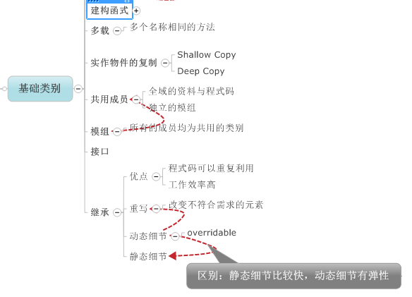
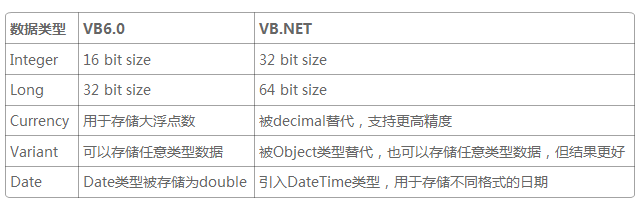

vb.net是完全面向对象的语言，支持面向对象的四个基本属性:抽象,继承，多态，封装，但vb是基于对象的程序设计语言，它只支持部分面向对象的内容像多态，接口等，不支持继承。
vb是基于对象的程序设计语言：

vb.net的类别

下面具体介绍一下它们之间的细微不同:
1，数据类型的改变

2，变量声明的变化
在VB6.0中，变量声明有许多限制。其中之一就是不能同行声明多个变量。如果一定要在一行中声明多个变量，就一定得指明每个变量的类型，否则将被默认为Variant类型。
Dim a1, a2 As Integer Dim a3 As Integer, a4 As Integer
第一行中的a1是Variant类型，a2是Integer类型。第二行中两个变量都是Integer类型。
VB.NET支持同行声明多个变量，举例如下：
Dim a1, a2, a3 As Integer
变量初始化是另一个问题。在VB6.0中不能同时声明和初始化变量，而VB.NET则支持这个特性。
VB.NET支持同行声明多个变量，举例如下：
Dim a1, a2, a3 As Integer
变量初始化是另一个问题。在VB6.0中不能同时声明和初始化变量，而VB.NET则支持这个特性。
3，数组
VB.NET对数组作了明显的改动。
数组范围。在VB.NET中，你需要格外留意数组范围问题。VB6.0默认数组下界为0，故数组中的元素数量等与数组上界值加一。下面的数组界限从A(0)到A(10)，共有11个元素：
Dim A(10) As Single
可以使用OptionBase改变下界值为1。在VB.NET中，数组和C++一样，下界值为0，不支持Option Base。
4，布尔操作符
VB6.0中的And、Or或是Xor语句是按位操作符。而在VB.NET中，它们是布尔操作符。执行这些操作将返回true或false。VB.NET引入新操作符来完成按位操作。
5，不支持Set语句
VB6.0使用Set语句指派对象。例如：
Set myObj = new MyObject Set a = b
在VB.NET中，不需要使用Set指派对象。例如：
myObj = new MyObj() a = b
6，new和nothing关键字
VB6.0中，AS New和Nothing关键字用于声明一个对象并初始化它。
VB.NET不支持隐式创建对象。